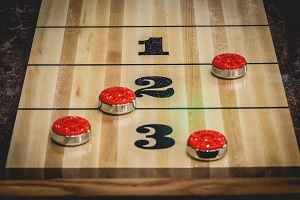
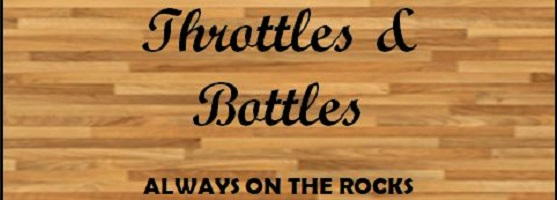

Basic Knock Off Game Play
Knock Off can be played one-on-one or with two teams of two
people. If playing with two teams, one of each set of partners
will play at opposite ends of the board and remain there for
the duration of the game. Games are played until one team scores
15-points and is deemed the winner. If you want to keep the
competition going, some will play the game to a score of 21 points.
In tournament play, the director will designate whether you
are playing "Short Foul Line” or “Long Foul Line.” Most tournaments
play with "Short Foul Line" rules, which means any puck past the
foul line closest to the shooter is considered in-play. In "Long
Foul Line" Knock Off game, the pucks are considered in-play when
they are past the foul line on the opposite end of the board. It’s
important to note that most home games are played on 14-foot tables
or shorter that only have one foul line in the center of the table
so you would play a single foul line rule which would put pucks in
play only if they are past the center line or only foul line on a
shorter table.
How To Throw Shuffleboard Pucks In Knock Off
Play may start from either end of the board, but the shooting
order and weight color are decided by a coin toss. The winner
of the flip may elect to choose the color of the shuffleboard
puck or the hammer. Named for the person who has the last shot
of the round, the hammer is considered an advantage since you
have the final opportunity to knock off an opponent’s puck.
The player’s alternate shots until the round is over and all
four weights have been thrown across the shuffleboard table.
The team or player who scored points on the previous round
must shoot first on the next round. If no points are scored
on the preceding round (I.E.: All weights are knocked off)
than the hammer changes hands. Play continues in this manner
until one team reaches the designated points usually 15 points.
How To Score In Knock Off
In each round of Knock Off, only one player scores points. The
team who has thrown their puck closest to the end of the board
scores all the points in that round. Only the pucks that are
ahead of your opponent's deepest weight are added together for
the score for that round. A weight scores one-point if it is
located between the designated foul line and the two-point
line. Weights completely across the two or three line likewise
count for the allotted number of points for that section of the table.
To judge if a weight is completely over the line it should be
viewed from above (i.e., look down over the top of the weight).
The entire weight must be over the line for it to count as the
next higher point value. If any portion of the weight is hanging
over the end of the board in the three-point section, it’s called
a “hanger" and counts as four-points. If you’re having trouble
calling a hanger, check by holding a weight flat to the edge
of the board and dragging it along the back end of the board.
If it hits the hanger the puck then it is worth the entire four-points.